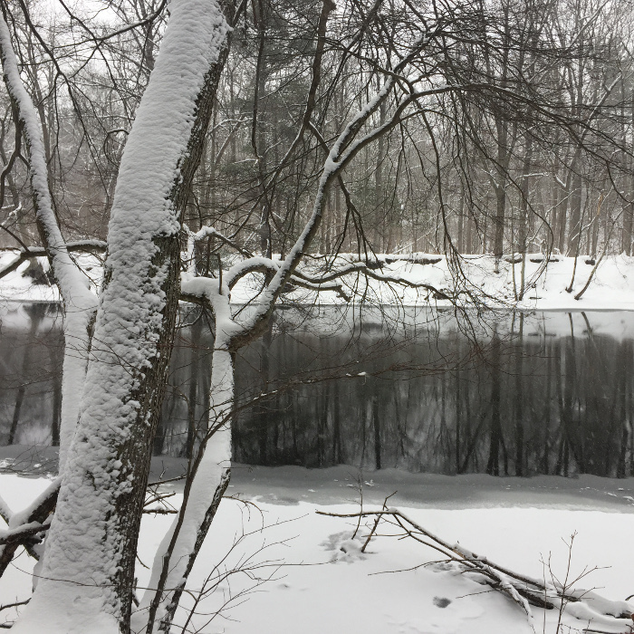
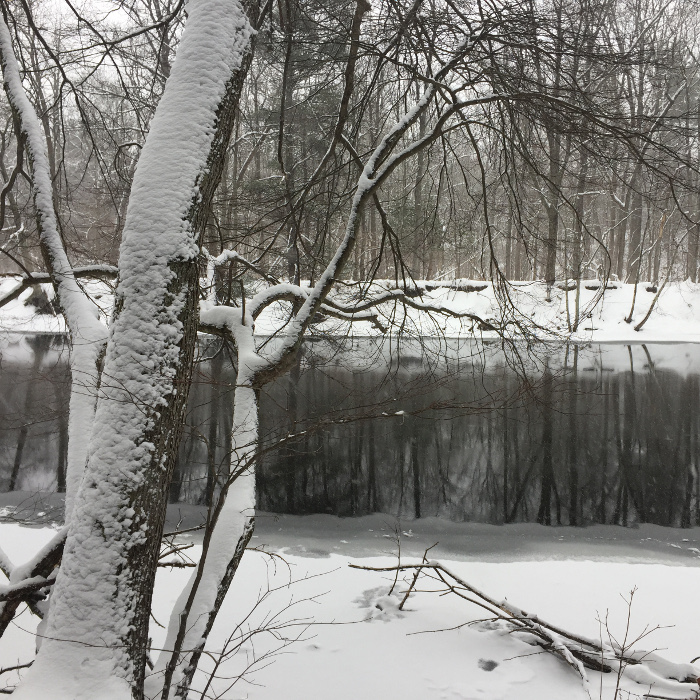

Whether you want to go for a stroll on a welcoming day or tear it up on a mountain bike, this property is for you. There is a scenic route that follows the Nashua River, as well as an alluring trail that follows the old railroad tracks. A walk in the Groton Town Forest is wonderful. As you let your worries and obligations fade away, just enjoy the untouched beauty of nature.
While out on the trails you may see Deer, Red Foxes, Coyotes, Beavers, Barred Owls, and Downy and Pileated Woodpeckers.
The Groton Memorial Town Forest was formed in 1922 to honor the Groton veterans who gave their lives in the Great War (aka World War 1). Originally 180 acres, the Forest has expanded to 513 acres through purchases and donations of abutting properties. The Forest was the first conservation property established in Groton, and the second Town Forest designated in the Commonwealth of Massachusetts. It is the crown jewel of the Groton Trails Network.
The Town Forest has 14 miles of trails with three marked trail loops: the 6.4 mile Town Forest Loop marked in both directions, and the 3.4 and 9.5 mile Town Forest Race Loops marked in one direction. The Town Forest network of trails is suitable for walking, running, mountain biking, snowshoeing, cross-country skiing, and horseback riding.
The Groton Town Forest is great for mountain biking, it has smooth flowing trails that are suitable for all abilities. Whether it is a network of cart roads or the 8 miles of single track, all routes lead to big smiles. For those looking for a longer route head north to Fitch's Bridge, cross over and head south to return. Parking is at the end of Town Forest Road or at the Senior Center.
Cross-country skiing in the Town Forest can be as easy or as challenging as you like. The cart paths are wide and mostly flat suitable for beginners or an easy day of skiing. Off the cart paths, the trails can be narrow, hilly, and sometimes very steep offering challenges for the experienced skier. The trails are not groomed.
For horseback riders, there’s a trailer turning circle in the parking area at the end of Town Forest Road.
The central part of the Town Forest is a flat glacier river delta, but it drops off sharply along rivers on the Eastern (Nashua River) and Southern (Squannacook River) borders. There are several kettle holes and kettle ponds in the central area that make striking exceptions to the generally flat terrain. To see the kettle holes it is recommended that you take the Town Forest Loop Trail.

 

Trail Map
New England Mountain Biking Association